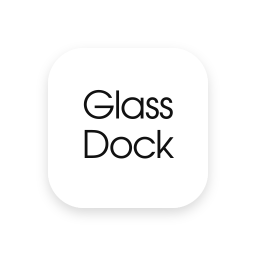

Motion with a purpose
Hover magnification, smooth animations, launch bounce, and labels that make each item easy to find.

GlassDockA dock for your Wayland desktop.
Pin your apps, track open windows, and tune the position, animation, and appearance from the GTK settings app.
Run the setup and choose GlassDock or GlassIcon Studio.
curl -fsSL https://raw.githubusercontent.com/Mandrusian/GlassDock/master/installer.sh | bash
The terminal setup can install or remove both GlassDock and GlassIcon Studio. Prefer to inspect first? Read the installer source.
The everyday essentials: launchers, running-app indicators, positioning, and controls.
Hover magnification, smooth animations, launch bounce, and labels that make each item easy to find.
Wayland layer-shell placement, edge and alignment controls, exclusive-zone handling, and per-monitor settings.
Pin launchers, group app windows, follow running apps through Sway IPC, and open useful actions from the context menu.
Auto-hide, fullscreen behavior, overlay stacking, launcher editing, and an optional login start.
$ glassdock & # Open the visual settings app $ glassdock-settings # Check the running dock $ glassdock-ctl status # Refresh or toggle visibility $ glassdock-ctl reload $ glassdock-ctl toggle
# Toggle the dock bindsym $mod+Ctrl+d exec glassdock-ctl toggle # Focus the first dock item bindsym $mod+Ctrl+1 exec glassdock-ctl launch 1
Two different things: On the dock itself, SwayFX provides desktop background blur through layer_effects. On this page, Chromium uses an SVG displacement map to bend the background through the glass edges; Safari and Firefox fall back to a lighter frosted material.
A companion app for themes, launcher icons, and file-manager icons.
Manage icon themes, change individual application launcher icons, and add user-level folder, Home, Trash, drive, and file-type icons. GlassIcon is built with Python and GTK 3, and keeps changes in your user profile.
No background daemon and no root access for icon changes. It works well with Thunar and lightweight window-manager setups where the desktop settings panel does not reach every icon.
$ ./extras/GlassIcon/install.sh # Include dependency installation $ ./extras/GlassIcon/install.sh --deps # Launch the app $ glassicon
The main GlassDock setup menu also includes Install / Upgrade and Uninstall options for GlassIcon Studio.
Preview the included styles. Fine-tune colors, opacity, borders, and shadows in Settings.
These are original CSS concept previews of GlassDock’s available theme directions, not screenshots of a running desktop. The material cues—translucency, edge highlights, color from the background and restrained hierarchy—are informed by Apple’s public materials guidance and its Liquid Glass design session.
Concept previews inspired by real glass optics: layered translucency, edge reflections, soft refraction and color drawn from the blue environment.
Requirements and manual installation.
Prefer a manual install? Clone the repository and use the bundled scripts:
$ git clone https://github.com/Mandrusian/GlassDock.git $ cd GlassDock $ ./scripts/install-deps.sh $ ./install.sh $ ./scripts/run-tests.sh
Built for: Wayland sessions with wlr-layer-shell, Python 3.9+, GTK 3, PyGObject, Pycairo, and gtk-layer-shell. Sway or SwayFX is recommended for window and running-app integration.
Made to be yours: settings live in ~/.config/glassdock/config.json. The uninstaller keeps them unless you explicitly choose to remove them.
One compositor caveat: rendering, layer placement, and blur can vary by environment, so validate these in your own Wayland session.
Source code, documentation, companion apps, and support.
Installation, settings, keybindings, troubleshooting, and project layout.
Read the README ↗Explore the implementation, follow development, or clone the repository.
Browse GitHub ↗Report bugs or discuss a setup issue with Sway, SwayFX, or Wayland.
Open an issue ↗Manage icon themes, application icons, and file-manager symbols.
Explore GlassIcon ↗Review the installer before running it on your computer.
Inspect installer ↗Understand the terms for using and adapting this open-source project.
Read the license ↗Help refine a small, customizable dock for the Wayland desktop.
Meet contributors ↗